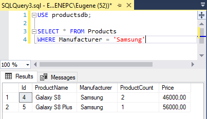
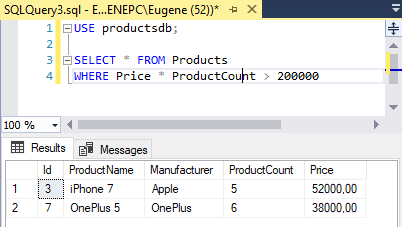
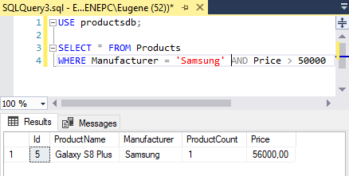
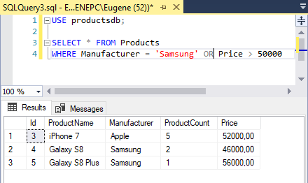
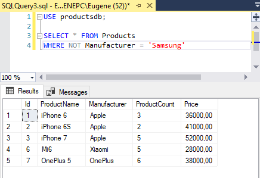
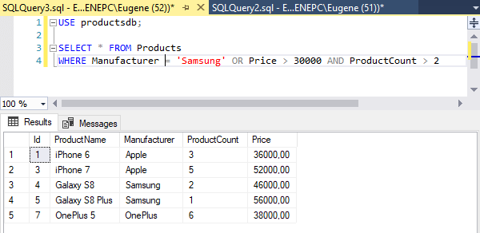

Фильтрация. WHERE
Для фильтрации в команде SELECT применяется оператор WHERE. После этого оператора ставится условие, которому должна соответствовать строка:
1 | WHERE условие |
Если условие истинно, то строка попадает в результирующую выборку. В качестве можно использовать операции сравнения. Эти операции сравнивают два выражения. В T-SQL можно применять следующие операции сравнения:
=: сравнение на равенство (в отличие от си-подобных языков в T-SQL для сравнения на равенство используется один знак равно)
<>: сравнение на неравенство
<: меньше чем
>: больше чем
!<: не меньше чем
!>: не больше чем
<=: меньше чем или равно
>=: больше чем или равно
Например, найдем всех товары, производителем которых является компания Samsung:
1 2 | SELECT * FROM ProductsWHERE Manufacturer = 'Samsung' |

Стоит отметить, что в данном случае регистр не имеет значение, и мы могли бы использовать для поиска и строку "Samsung", и "SAMSUNG", и "samsung". Все эти варианты давали бы эквивалентный результат выборки.
Другой пример - найдем все товары, у которых цена больше 45000:
1 2 | SELECT * FROM ProductsWHERE Price > 45000 |
В качестве условия могут использоваться и более сложные выражения. Например, найдем все товары, у которых совокупная стоимость больше 200 000:
1 2 | SELECT * FROM ProductsWHERE Price * ProductCount > 200000 |

Логические операторы
Для объединения нескольких условий в одно могут использоваться логические операторы. В T-SQL имеются следующие логические операторы:
AND: операция логического И. Она объединяет два выражения:
1выражение1ANDвыражение2Только если оба этих выражения одновременно истинны, то и общее условие оператора AND также будет истинно. То есть если и первое условие истинно, и второе.
OR: операция логического ИЛИ. Она также объединяет два выражения:
1выражение1ORвыражение2Если хотя бы одно из этих выражений истинно, то общее условие оператора OR также будет истинно. То есть если или первое условие истинно, или второе.
NOT: операция логического отрицания. Если выражение в этой операции ложно, то общее условие истинно.
1NOTвыражение
Если эти операторы встречаются в одном выражении, то сначала выполняется NOT, потом AND и в конце OR.
Например, выберем все товары, у которых производитель Samsung и одновременно цена больше 50000:
1 2 | SELECT * FROM ProductsWHERE Manufacturer = 'Samsung' AND Price > 50000 |

Теперь изменим оператор на OR. То есть выберем все товары, у которых либо производитель Samsung, либо цена больше 50000:
1 2 | SELECT * FROM ProductsWHERE Manufacturer = 'Samsung' OR Price > 50000 |

Применение оператора NOT - выберем все товары, у которых производитель не Samsung:
1 2 | SELECT * FROM ProductsWHERE NOT Manufacturer = 'Samsung' |

Но в большинстве случае вполне можно обойтись без оператора NOT. Так, в предыдущий пример мы можем переписать следующим образом:
1 2 | SELECT * FROM ProductsWHERE Manufacturer <> 'Samsung' |
Также в одной команде SELECT можно использовать сразу несколько операторов:
1 2 | SELECT * FROM ProductsWHERE Manufacturer = 'Samsung' OR Price > 30000 AND ProductCount > 2 |
Так как оператор AND имеет более высокий приоритет, то сначала будет выполняться подвыражение
Price > 30000 AND ProductCount > 2, и только потом оператор OR.
То есть здесь выбираются товары, которыех на складе больше 2 и у которых одновременно цена больше 30000, либо те товары,
производителем которых является Samsung.

С помощью скобок мы также можем переопределить порядок операций:
1 2 | SELECT * FROM ProductsWHERE (Manufacturer = 'Samsung' OR Price > 30000) AND ProductCount > 2 |
IS NULL
Ряд столбцов может допускать значение NULL. Это значение не эквивалентно пустой строке ''. NULL представляет полное отсутствие какого-либо значения. И для проверки на наличие подобного значения применяется оператор IS NULL.
Например, выберем все товары, у которых не установлено поле ProductCount:
1 2 | SELECT * FROM ProductsWHERE ProductCount IS NULL |
Если, наоборот, необходимо получить строки, у которых поле ProductCount не равно NULL, то можно использовать оператор NOT:
1 2 | SELECT * FROM ProductsWHERE ProductCount IS NOT NULL |